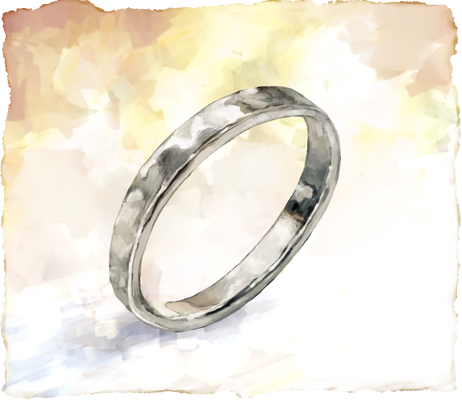

森の中を三人がゆく。鬱蒼と繁る木々はハザマの決して強くはない日光を遮り、長い年月を経た大木の根が地表を絡まるように覆う。その合間を縫うように歩みを進めれば、隙間なく生い茂る下生えは湿気をはらんで脚に纏わりついた。
「そろそろか……」
ふぅと息を吐いて地図を確認する。漸く海が近い。久しぶりに吹いた風がざぁぁと木々を鳴らした。汗ばんだ身体が程よく冷やされてゆく。
風は海の方角から吹いている。見やれば木々の落とす影が途切れ、陽に照らされた一角が広がっている。その向こうはすぐに海岸だろう。もっとも、ここに注ぐ日差しはハザマの紅い空からのものだが。
俺たちは誘われるようにそこに踏み入る。地面からは大きな岩肌が覗き、木々の侵入を阻んでいる。
丁度いい。平たくて、頑丈な場所が必要だったのだ。ここにしよう、俺がそう言うのを待たず、チカギは岩の縁に投げ出すように腰を下ろし、もう歩きたくねーとばかりにメロンに齧り付き出した。
神メロン。未知のすごいメロンのどの部位を誰が食べるのか…… それを決めるためにちょっとしたクジをした俺たちだが、この立つのもダルそうな男が一等を引き、続いてジツ、俺とは言えば最下位。
こいつはクジを引くときには興味ないねみたいな顔をしていたくせに、今の調子を見ると満更でもなさそうだ。
ジツはその隣に座り、チカギがメロンの一番旨そうな部分を食べているのをじっと見ている。文句は言わない。思えばジツも感情豊かになったものだ。それとも俺がこいつの僅かな変化に気づくようになっただけだろうか。
二人を微笑ましく思いながら、残されたメロンを俺は口にした。十分旨い。まぁ、二人にとってはそういうことではねぇのかもな。こうした馬鹿馬鹿しいやりとりが友誼を育てるってモンだろう。
──育てる？ 俺たちにこれからがあるのか？ ついさっきまではそんな時間は無いと、それでもと思い詰めていたが今は少し違う。
あるか無いかに関わらず、今を尽くす。そのスタンスは変わらない。だが、ジツと交わした言葉が俺に一つの決意をもたらしていた。決意というのは大袈裟か。どっかに残ってた投げやりさがマシになったというか、まぁ、そんな感じだ。
それで、俺は一つの思いつきに至っていた。メロンに夢中な二人に話を続ける。
「でさ、簡単なリングを作ろうと思うんだ。作成の異能を使わずにな」
「ほー？ よく分かんねーけど面白そうじゃん。」
チカギが身を乗り出してくる。思っていたより興味ありそうな感じだ。対してジツはいつもの調子でストレートに疑問を口にした。
「……異能を使わずに？ 凝った物を欲してる訳ではないが、何故、不要な労力を費やす？」
不要な労力か。そこには多少物言いたい気持ちもあるが、くどくど説明するより経験して貰えばいいことだ。
「んー。俺はずっとこのハザマの異能ってやつを信用しきれてねぇんだ。元々扱うのが得意だったものは異能としても馴染んでいるようだが……」
言って、幻術でキラキラを飛ばしてみせる。二人の目がそれを追う。異能で出したはずの光は、かつて装飾品に仕込み客の目を楽しませていたキラキラの術──ふざけた名前だが俺はそう呼んでいる──のように三人の間を飛び交い、森の中に消えていった。
「それでもだ。このハザマが本当に存在する世界なのかさえ不確かだが、出来るだけあり得る方法で作っておきたいんだ」
服の下に隠しつけられていた飾りを外す。
「素材も同じだ。ハザマの素材はなんとなく信用できねぇ。ハザマが消えた時、残るかもわからないだろ？ だから元から俺が持っていたこいつらを鋳つぶして使う」
ツノ飾りの先端に付いている、菱形を重ねたような形の装飾と似ているそれを二人に見せた。
だが、ジツの視線はそこにはなかった。うつむき、懐から何かを取り出して親指でなぞっている。そこにあるものを俺はよく知っていた。時々、ジツがそうしていたから。それを作ったのは俺だから。あのカスミ湖で、アランさんが旅立ったあの地で。
しまった、そう思った。
永遠に枯れないようにしてくれ、そうジツが望んだもの。一株の花が閉じ込められた細工。花だけを切り取らなかったのは俺の勝手な希望だった。いつかあの花を永遠から解き放ち地に返したいと思った時、土に植え花を枯らし実を作り終わりを、いや、続きを迎えられるように。
俺はどこかあの花にジツを重ねていたのかもしれない。
──勝手な。
そうだ。
残るかわからねぇってのも、俺の勝手な思い込みだ。
もう少し言葉を選べば良かったか。苦い思いと一緒に手の中で飾りを転がしては眺める。
「壊すのか。飾りが無くなるぞ」
「え、いいのかそれ、大事なモンじゃ……」
ジツは顔を伏せたまま平坦な声で、チカギはあからさまに焦りを露わにして俺に問う。対照的な二人に、俺は努めていつもの調子で答えた。
「ああ、大事にしているツノの輪は残すし、高価なもんじゃねぇ。銀と、僅かの銅。一般的な銀の合金だ。純粋な銀ってのは柔らかすぎるからな」
俺は少し声を強めて続ける。
「それに、モノ自体がなくなるわけじゃねぇ。新しい形になるんだ。信用してないとは言ったが、ハザマの素材も砕いてちょっとだけ入れちまうか。運が良ければ不思議効果のついたものを外の世界に持ち出せるかもしれないしな」
持ち出せるかもしれない。その言葉にジツは顔を上げた。続けてチカギがからからと笑う。
「乗った。なんつーの、お前らと何かやるの結構楽しいしさ」
言うなり早速素材を探そうと荷物を漁りだす。その軽さとノリが今はありがたかった。
俺はうっし、とうなづく。
「地金の量に限りはあるし、ここにある道具と時間で作れるものだから、まぁ輪っかだな。俺はツノにつけるが、二人は指にするだろ？ どの指にするか希望を言え。まずはサイズを測るぞ」
♦︎
「どうしよっかな、左手の薬指はダメだからよ」
チカギが俺たちに聞こえるように言いながら悩んでいる。左手の薬指はダメだからなー！チラッチラッ、みてぇな感じだ。はーー、こいつ。
無駄に長く生きてる俺がマウント取るのも馬鹿馬鹿しいし生暖かい笑いを返していると、ジツはジツでクソ真面目に悩んでいた。
「刀を持つのに妨げにならない指が良い。薬指は良くないのか？」
刀て。おまえは戦国武将か何かか。はーー。こいつはこいつで前途多難だな。
二人がいつも通りやり合っている間に作業を進める。まだまだ余らせているものすごい木材をノコで切り、周囲を削ぎ落として緩やかにテーパーのかかった丸棒にしてゆく。
「決まったか？ じゃあ指を出せ」
「じゃー左の人差し指。理由は内緒。ジツは？」
チカギが秘密を示すように口元に当てた指を、そのままするりと俺に差し出した。いかにもインドア系な綺麗な手だ。
「ならば同じ指で良い。道を示す指だろう」
「二人とも左の人差し指か。よし」
二人の指に糸を回し、長さをとって切る。その糸を作っておいた棒に回して周囲が一致するところにナイフで印をつけた。
手を動かしながら、ジツに文化について少し教える。装身具には地域や民族によって様々な意味があること。伴侶の関係にあることを表したり、決意や勇敢さを表したり。イバラシティにおける左手の薬指の意味も。
あくまでお揃いにするなら俺も指にすれば良かったが、俺には指輪をする習慣があまりない。これもまた文化だ。彼らが想いを込めて指を選ぶように俺たちはツノに輪をかける。
輪をかける場所が異なっても。
文化や見た目が異なっても。
この時間を共有してそれぞれの想いを込められたなら。
そんな事を考えながら準備を続ける。
無骨な皿を取り出して岩の上に置き、周囲を適当な岩でがっしりと囲む。この旅で何度も組んできた、焚火のかまどのように。この皿はリーゼント騒ぎの時に焼き物連中の所から拾ったものだ。クソ頑丈で都合よく釉でコーティングもされている。
次に金槌で先の戦闘で手に入れたハザマの生き物の牙を砕く。白い粉のようになった残骸を皿の上にほんの少しつまんだ。
これを銀に混ぜるのだ。
ぶっちゃけ、科学的には殆ど意味はねぇだろう。ま、ハザマの不思議物質のことだ。なんらかの影響を及ぼすかもしれない。
「さてと。おまえら、何を入れたい？ 俺はこの爪かなぁ。なんか強そうだし」
チカギは作業する俺の手元をまじまじと見つめている。
「そうだな、あんま良いの持ってねーし。さっき俺らで倒した蜥蜴の、ジツが剥いだ鱗かな。ほら、寄越せ」
ああ、あれか。
いいのか、ジツ？ と見れば
「……他に所持して無いなら仕方が無いな。駅にいた空を泳ぐ鯉も、これに似た鱗を持っていたぞ」
コイ！！
ジツもやっとあれが龍ではなくコイだと認めたか……
「あれなーー！忘れようがねぇぜ。未だに意味わからんもんアレ……」
マジで色々ありすぎたな、ハザマ……。あっさりとジツからチカギに渡された鱗を見ると確かにあのコイのものによく似ている。
チカギが指先に小さな火を灯し、鱗を照らす。反射された光が煌めきとなってあたりに散らばった。タクトを振るうように腕を踊らせれば、光の粒がそこら中を飛び跳ね回る。なんだっけ、サンキャッチャーか。あれっぽい。
「なんかさ、さっきイツがやってた……キラキラしてた異能？ 似てんなーと思ってさ」
言いながらぽいっと、こちらに鱗を放り投げた。俺は受け取ったそれを確かめる。
「なるほどな。あの時、コイの鱗で作った輪は……かなり変わった一品だ。作る時、カスミ湖の水を取り込んで、不思議な現象を起こしたんだ。確かに俺と何かの相性が良かったのかもしれない」
──そういえば、同じ場所であのジツの枯れない花を閉じ込めた時も、かなりの不思議パワーが湧き起こった気がする。
思い出していると、ジツはまさしくその花の封じられた細工を差し出していた。
「入れるものだが……この花の葉を持ち出したい」
本気か？ 聞き間違いではないのか？ それともこの細工の封についてちゃんと話していなかったか。いいや、説明はしたはずだ。
「本気で言ってるのか？ その花がお前にとってどういうものなのか少しは知っているつもりだ。ジツ、お前はそれを永遠に枯れないようにして欲しいと……ああ、俺はその永遠ってやつが歪なものだと思った。思ったさ！ でもな、ジツにとってそうであることがきっと大切なのだろうと……」
透明な封の中に閉じ込められた花は、一株ごとあの土地の土と一緒に時間を止められている。その仕組みはカスミ湖の奇跡がなし得たことで、作った俺でさえよくわかっていない。けれど、けれどだ。今なら作り手として直感的にわかる。
「そいつの封を解いたら、二度と元には戻せない。花はまた時間を取り戻して生き始める。いずれ枯れて種を作る。それがどういうことか、わかってるんだろうな？」
気がつけば、俺はジツを責め立てていた。
自分の口から出てしまった言葉の強さに驚いてはっとする。
無音が二人の間を満たすと、ジツは言葉を少しずつ紡いだ。
「……この世界が幻なのか、実在するのかは分からない。
だが、あるべき物はあるがままにするのなら──この花はこの世界に残して行かないといけないのだろう」
それは初めは、小さな声だった。だが、決して聞き間違えではない。
「それなら、最果ての地でこれを根付かせようと思う」
海の向こうの果てを見て、そう言い切る。
その声には力があった。
俺は確かにジツの決意を感じた。
「そして、それでも…… この花の葉くらいは。よすがとして手元に残したい」
最後に零した言葉は、怯えるように。
どうしてか、そんなジツは少しばかり小さく見えた。
歩み寄り添い、語りかける。
「どうしてそんな顔をする？ よく決心できたな、ジツ。俺はな、この花の意味を知った時、あの瞬間から変わらない事をお前が望んでいるのではないかと思って……」
ふ、と笑いが溢れる。確かに、こんなんじゃチカギに過保護言われるのも仕方ねぇかもな。
「でも、そんなことはなかったんだな。正直安心した、ってのはおかしいか。ま、ジツがそうしたいと思う事を伝えてくれて俺は嬉しいよ。もちろん、そいつの葉は少し頂いて銀に混ぜよう」
あたりを見回して考える。
「植える場所も探さねぇとな。浜に植えたんじゃ塩で枯れちまう。この森ならいい感じなんじゃねぇか？」
♦︎
三人分の素材を砕き終わると、銀の飾りも皿の中に入れた。
「まずはこれを溶かす所からだ。俺は火の術とか苦手だし、火を扱うのはジツとチカギ、おまえらがやるんだ。そうだな、これはチカギに頼むか。火力に自信がありそうだし。クソ熱い火を出すのは得意だろ？」
俺に問われてチカギは自信ありげに答える。
「ん。よく分かってんじゃん？ 得意も得意。つってもこのハザマに来てから身に付いた異能だから、あんまり調節はやったこと無いな」
ハザマでは俺の元の世界で使えていた術の体系はかなり制限されてしまっている。ここにはガスバーナーのような器具も高度な魔道具もなければ、俺は元々熱を扱う術が得意ではない。そのせいか異能としても殆ど扱えない。
多少の無理を言っても二人には手伝ってもらうつもりだった。というのは若干の建前もある。ようするに俺はこの三人で何かを作りたかったのだ。
「よし。銀が溶けるのは……これは純銀ではねぇから、930℃くらいか。高温の青い炎だ。吹き飛ばさねぇように、皿の中身を熱してくれ」
「930℃って言われても分かんねーよ。青……とにかく青ければ良いか。」
まぁ、それもそうか。まずはやってみてだな。
ゆるりとチカギの手が伸ばされて。
んー、と小さく唸れば、瞬きひとつの内に掌へ赤々しい炎が宿り、大きく燃え盛る。
「えー、青か、青……。飛ばさねーようにお前が見ててくれ」
もちろんだ、そう答えて見守る。銀の色で具合はわかる。
少しの逡巡の後、これか？とチカギが呟いた。
何かコツを見つけたのか炎はすっと青くなる。
「いいぞ……」
伸ばされた手から皿の中へと炎が降り注ぎ、熱せられた銀は皿の中で玉となった。灼熱し橙から黄緑へと揺らめき鮮やかな炎を纏いながら、ぷるぷると震えている。
暑さか眩しさが苦手なのか、少し遠巻きに見ていたジツもいつのまにか隣にいた。
「こうして見ると生物のようだな」
「こういうの、初めて見るかも。火をこんな使い方したのも初めて。案外さ、悪く無いな、ハザマも」
チカギは魅力されたかのように皿の中を見つめている。その横顔は炎に照らされて、いつもの少し陰のあるっぽい彼の、意外な一面を見るかのようだった。
「ああ。だが、ハザマじゃねぇ。異能でもねぇ。俺たちさ。チカギが使う炎だからさ。俺たちはいい感じ、だろ？」
すかさず俺は皿に木材の棒を突っ込み、銀を掻き回す。棒は瞬く間に炭となって銀に含まれた酸素を奪った。
「そいつをこの一緒に熱くなった岩に流す。そのまま熱していてくれ」
チカギによって熱し続けられる皿をやっとこで掴み、ゆっくりと傾ける。玉になった銀はころんと転がって岩の上の緩やかな窪みに落ち、そのまま丸く固まった。
「よし、火を止めてくれ。ここからは俺の仕事だ」
冷えた塊は、銀の輝きを取り戻している。
「こんなこともあろうかと、キャンプの作業所から小型の金床やら道具をパクってきておいたんだ。ジュエリーに使うものとは形も違うが、やれねぇことはねぇ」
「どんだけ想定したらそんだけ用意周到になるんだよ。やっぱ世話焼き体質だな、イツ」
「世話焼きて。わからねーかなぁ。こんなこともあろうかと、人生で一度は言ってみてぇセリフだろうが」
揶揄うチカギにロマンを語る。あくまで俺はやりたい事をやっているだけで、世話焼きではないのだ。あくまでジツが要保護児なだけで、過保護ではないのだ！
当の要保護児は予想通り、厳格な事を言い出した。
「元の持ち主が居たのではないのか？」
どうみても無断で拝借してきた事に良い顔はしていない。ううむ。灰色の都合みたいなものを教えるのはなかなか難しいな。
「ハザマももうすぐ無くなるかもしれねぇし、俺らを巻き込んでおいて今更だろ。それに、これは最後にイタズさんがいた場所にあったものなんだ。何となくイタズさんが持っていって良いと言った気がしてな。俺の都合の良い妄想かもしれねぇが……」
ジツはイタズと聞いて途端に黙った。チカギも訳ありなのを察したのか口をつぐんでいる。こりゃちょっとズルい言い訳すぎたかもしれねぇ。イタズさんの名を出すのはな…… だが触れねぇのもなんかな。
どうしたもんかな、そう考えているとジツの荷物に括り付けられている鳶色の翁の面が風に揺れたのかカタりと鳴った。
老人の残した面は、俺の言葉を肯定したか、都合の良い想像を笑ったかのようだ。
端末からのイタズさんの反応は少し前に消えている。ナレハテというのも、ずっとは存在しないのだろう。俺はオカルトは信じていないし、大凡は俺の想像力がもたらした勝手な解釈なのだ。
そんなことはわかっている。
だが、それでいい。
俺のイタズさんへの敬意は変わらない。
それを働きで示せればいい。
あの老人が、金床で鉄を打つ姿を思い浮かべる。
異能で作る以上、そのようにしたかは定かではないが、空想の中のその姿はやけにサマになっていた。
硬い、頑丈そうな切り株を見つけ金床を置く。完全に固定はできないが、この重さならなんとかなりそうだ。
そこに打ち付けられてきたものを想う。二人に向き合い、俺は語った。
「同じさ。鍛造つうんだ。みんなが鍛治といって想像するやつだ。あの、叩いて刀を造るやつと同じなんだ、この作り方は。じゃ、始めるぞ」
♦︎
銀を置き、打つ。
ハンマーを振るえば森に硬い音が響く。
叩き、回し、叩く。
「え、すげー本格的じゃん。俺モヤシだから見てるわ。頑張れ」
「ああ。けどチカギはもう少し筋肉つけたほうがいい気がするけどな……」
繰り返す。
叩いて回し、回して叩く。
「こうして叩くとびみょーに入ってる空気とかがな。抜けていくんだ。密で整った金属の塊になる」
音と熱気が一体化し、俺の集中力も高まってゆく。
「普通はさ、大体の指輪とかは鋳造つってな、型に金属を流しこんで作るんだ。鋳造は複雑な形を大量に作れる。鍛造は手間がかかるし、一個ずつしか作れねぇし、シンプルな形しか作れねぇ」
叩き、回し、叩く。
「だがな、叩かれ、叩かれ、そうして出来上がる。鍛造で造られたものは、一つの塊だ。めちゃくちゃ丈夫なんだ」
四面を叩かれ、塊は形を成してゆく。
あたりにはハンマーを打ち付ける音だけが響く。なんとなくその緊張感を解したくなり、俺はしょうもない冗談を口走った。
「ま、だから、イバラシティじゃ鍛造のリングは永遠の印として結婚指輪に使われたりするらしい……」
いつのまにか静かになっていた二人。その静寂を破るように結婚指輪と聞いたチカギは笑いだした。
「悪いな、結婚相手、決めてるから」
ん、恋愛関係とかでなくてか。チカギって高校くらいだよな？ そんな人生すぐ決めちまって大丈夫なのか？ いやいやいや、俺はどこのおっさんだよ。チカギが求めてるのはそんな人生を語る事ではないし、そんなものは年齢に関係なくそれぞれの価値がある、はずだ。18歳？19歳だか知らねぇが、若いうちの判断に価値があるとかないとか、大人が、いや他人が勝手に決めていい事じゃねぇ。当然、友人でもだ。まあ、ジツが同じこと言い出したら詐欺に引っかかってないか疑うが。一瞬の間にグダグダ考えて俺の口から出たのは二言だけだった。
「マジか。お幸せにな」
ジツを見ればなんのことかわからないという顔で大人しくしている。はーー。いや、まぁいい。
「さしずめこれは友情の印ってところか。ま、深いことは考えねぇ。っと……」
俺は叩く手を止めた。
「硬くなったな。焼きなますぞ。何度もこれを繰り返すから、ジツとチカギ、交互に頼む。まずはジツからだ」
岩の上に銀の棒を置いてジツに示す。
「ほんのりピンク色になる程度に熱してくれ。当たり前だが溶かしてしまうような高温はダメだ。500℃くらいだ。つってもわからねーだろうから様子見しながら調整して……」
「だから温度で言われても分かんねーって。イツの言う通りにやるから指示しろ」
「ジツはどうだ？」
「止め時など分からないぞ。指定しろ」
「やっぱそういうもんか。火の異能よくわかってねぇからな。ま、タイミングは俺に任せろ」
ジツが銀の棒の上に手を翳し、何度も撫でるように動かす。
繰り返す度に、じわじわと金属の色が変わっていく。
「お、いい感じじゃねーか。今の感覚を覚えてくれ。よし、そこまで。こいつを水で……」
水に赤くなった銀を突っ込むとジュッと音を立てた。
「冷やすと硬くなるんじゃねぇかって？ 金属によるんだよ。銀の場合は柔らかくなるんだよな」
チカギはわかってるのかわかってないのかおーとか言いつつ作業を眺めている。ジツは柔らかくなるというのが不思議なのか、爪先で棒をつついてみたりしている。
「いやいやいや、そんなブヨブヨにはならねぇって。ハンマーで叩くとな、返ってくる感触でわかるんだ。さ、この調子で続けるぞ」
♦︎
「ふぅ、いい感じの棒になったな」
「おおー」
「……」
「こいつを…… 計算した長さに切る。んで、前もって作っておいたこのものすごい木のゲージに巻きつけて、と。本当は金属でやるんだがな。ものすごい木だから問題ねぇ。俺のコンプラ的に問題ない程度にハザマで使えるものは使うぜ」
「用意周到過ぎるだろ」
「お前らがどの指にするか悩んでる間に作っておいたんだ」
チカギの軽口にそう答える。口ではそう言いながら、次はどうするのか気になってるのが丸わかりだ。
またまた叩かれ、硬い木の棒に沿って塊だったものは曲がってゆく。そうして、リングの形になった。銀の輪だ。
「サイズも問題なさそうだ。で、このままだと本当の意味では繋がってない。わかるだろ？ だから溶かして繋げる」
まだ面取りも磨かれてもいない銀の輪は、その辺に転がっていても気づかなそうな何かの部品のようだ。しかしその両端は確かな技術によってしっかりと揃えられ、合わせられている。
「普通は、ロウ付けつってな。本体より溶けやすい合金を使って繋げるんだ。楽だしな。でも、ここにはそんなものはないし、より頑丈で相応しい方法がある」
と、ジツに見えるよう、つなぎ目を向けた。指先でそこをトントンと叩いて説明する。
「トモ付け、つまり本体の繋ぎ目のあたりだけを溶かして溶接するんだ。めっちゃいい感じに調整された火加減と制御が必要な難しい仕事だ。でも俺は心配してねぇ。ジツ、お前にならできるだろ？」
ジツは俺をまっすぐに見て答えた。
「……重要な部分を感覚で説明するな。──とにかく、これを繋げれば良いのだろう」
岩の上に置かれたリングの前。
深呼吸した後、祈るように顔の前で両手を合わせる。
その動きはいつか見た武術の型を俺に思い起こさせた。
程なくして、ジツの手の中に焔が生まれる。
十分に制御されている。だが、まだ大きすぎる。さて、どうする……？ そう思えば、合わされた指の中で、それは小さく圧縮されてゆく。
力を込めているのだろう、指の先が白い。
頬を汗が伝うのが見えた。
続けて指を離せば、焔は光の尾を引きながら細く細く伸びた。
その切先を指先に宿したまま、指し示すように指輪に近づける。
繋ぎ目が、焼かれてゆく。
俺は黙って灼熱するリングを眺めていた。
何も不安はなかった。
いつだってジツは、その身を律していた。
戦いの時も。
鋭く細く。
研ぎ澄まされた刃物のような青い焔が銀の輪を焼く。
小さく静かな、けれど触る事も叶わない青の中で。繋ぎ目はほんの一瞬、溶けてその隙間を埋めた。
「……！」
声をあげようとしたとき、炎は既になかった。
完璧なタイミングだった。
桜色に染まったリングはゆっくりと鈍色に落ち着き、やがてその輝きを取り戻す。
「……ジツ、お前ってやつは！ すげぇやつだよ！」
ジツの肩を叩き、胸の高さに拳をあげる。フィストバンプの構えだ。
「ん？ 同じように拳を打ち合わせるんだ、ほら！」
ジツの纏う、張り詰めた空気がふっと溶けてゆく。
どこか遠い所にあった眼差しが、ここに帰ってきたかのようで。
俺を見るなり、ジツは大きく息を吐きだした。
「……決闘の時もそうだったが、打ち合うのが余程好きなのだな」
その声と表情には隠せない呆れが少し滲んでいる。だが、拒否するでもなく見よう見まねで拳を合わせてきた。
勢いをつけてガシッとやる。
「何してんのかよく分かんなかったけど、やるじゃん」
「ジツはすげーよ。チカギもそう思うだろ？ っし、その調子で残りの二つも頼む。俺は最後の仕上げをする」
♦︎
望みの幅になるよう、輪をやすりで削る。幅は3.5ミリあるかないか、厚さは1.8ミリくらいだろうか。
「幅と厚さはこんくれぇか？ 少し細めで。男が指輪しててキモい〜とか言われねぇし、まぁどんなスタイルにも合わせやすいってもんよ」
幅が取れれば、リングの角をハンマーで叩いて落とす。丸くしすぎず適度に角を残し、シャープな印象とボリューム感を両立させる。内側はほんのり丸めを大きめに。肌に当たるところを柔らかく自然に形作る。
「そういや、聞いてなかったが…… もし金属アレルギーとかあったり、指輪に抵抗あるならチェインを通してペンダントヘッドにするとか？ あー、ジツは紐が好きだからさ、紐通してどこかにつけといても。ま、無くさねぇ方法ならなんでもいい」
チカギは、仕上げをする俺と残りの二つのリングを繋げるジツを応援しつつ見学モードに入っている。俺が不安を口にするとリングをする予定の指を立てて応えた。
「気持ち悪がられたとしても逆に自慢してやるわ。ダチの手作りだぞーってさ。アレルギーもないし」
「そうか。なら良かった。アレルギーのでねぇ金属ってのもあるが……手持ちには無かったからな」
全体に浅く大きめの槌目をつけてゆく。整いすぎないよう、あえて僅かに歪ませて。
繰り返し、繰り返し、ハンマーを打つ。
形は出来た。
最後に磨き上げる。
ここにはろくな道具がないが、元々ピカピカに仕上げるつもりはねぇ。やすりで大きな傷を潰し、荒く磨いて艶消し仕上げにする。
キャンプの作業場から使えそうなものは持って来た。元々刀剣用のものなのだろう。使ってみれば特に問題もない。
「っし。ありあわせの道具で仕上げた割には、悪くねぇ……」

光に翳して見る。静かな水面のゆらめきのようにリングの表面が波打っている。
角度が変われば、僅かな凹凸が赤い空の色をうっすらと反射して移り変わりながら複雑な表情をみせた。
「悪くねぇどころか、ん…… どうよ」
二人にそれぞれのリングを手渡す。
「はめてみな。今はピンとこねーかもだが、長く使い込めば味もでてくる。俺たちの友情の印だ」
結婚指輪ネタを濁すために言い出した友情の印とかいうフレーズを勢いで使ってしまったことに気づき、今更ながらクサ過ぎねぇか？と自嘲しそうになる。
が、チカギはスルーしてくれたらしい。
「お、だいぶ良いな。こんな場所でも結構本格的にやれるもんだな……」
言ってリングを赤い空に翳した。見ればジツも片目で覗いてみたり顔を傾げたりしながらリングを覗き込んでいる。その様子が少し面白くて、俺も同じように向こうを覗いた。
「輪の向こう、か……」
見えるのは、変わらないハザマの赤黒い海。それはそうか、と思うもリングの表面の揺らぎが反射する光は俺がかつて見た海を思い起こさせた。
──俺たちと海と空と。光は巡って原初の結び目を照らした。銀色の輪は無数の色を、世界を映し出している。
「ああ。いい、感じだ」
漏らした俺の呟きを繰り返すように、チカギが続ける。
「かなーり良い感じ。ん、サイズばっちり。ど？」
似合うか？とリングを指にはめて人差し指を見せつける。満足げに、けれど照れ臭さで隠したのかどこか控えめに。
「今はまだムズムズするけど、そのうち慣れて来るだろ。友情の印、って……」
何か言いかけるも、こっちを見ると顔を背けて飲み込んだ。何なんだよ、アレだろ、聞こえてたぞ。やっぱり友情云々がクサいとか大袈裟だとか思ってたんだろ、てめぇ。
まぁ、いい。
リングの出来には関係ねぇんだからな。
そう思うと、海を向いたチカギの口元が小さく動いた。
ハザマにも潮風は吹くのか。
チカギの長い髪をなびかせてゆく。
「そうだな、悪くない。なんつーの、こういうのって……嬉しいもんだな。
……ありがとうな」
風に流すように、こぼされた呟き。
その最後の一言と共に俺に振り向くと、ふわりと笑いかける。
俺はきっと少し驚いた顔をしていただろう。チカギが俺を見る目に影は感じらなく、こいつがそんな素直な笑みを浮かべたことがちょっと意外だったのだ。
リングをはめたり外したりを繰り返していたジツも、こちらを見て気のせいか何か言いたげにしている。
「……ジツ？」
「…………こういう時は。
──ありがとうと言うのだったか」
再び聞こえたそのありふれた響きに。俺は一瞬言葉を失う。まいったな。ジツまでそんなことを言い出すなんて。
でも、そうだな……
「ああ。けど、少し違うな。礼を言うのは俺もさ。これは三人で作ったんだ。二人がいなければできなかった」
自分のリングを右のツノにはめる。古い輪と俺たちの作ったばかりのそれが触れ合う。遠い過去になっても、知るものが居なくなっても、俺さえもが忘れそうになっても。決してなかった事にはしたくない。そう思うものを輪にして俺はここに刻んできた。
「俺たちは、いい感じだし。俺はそう感じる自分を誇りに思う。こんなハザマの果てまでありがとうな。皆が、いなければ…… 俺はここまで来ることはできなかった」
目の前の海へ。
マシカの、ハザマの末端へと一歩。
振り返り、二人を呼ぶ。
「そしてこれからも、だ。ここまで来て、まだ何も確かなことはわかっちゃいねぇが。俺たちがいい感じで……」
言いかけて、やめる。
「なんか湿っぽくなっちまったな。こんな海だがとりま、砂浜を走るか！ 来い！ ジツ、チカギ！」
何を言っても言葉じゃ足りない気がして、 俺は赤黒い海が波打つ砂浜に走り出した。